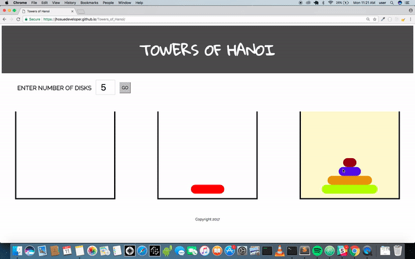

Towers of Hanoi
A complex game built with JavaScript, HTML & CSS

Parallex Store
An online Store built using Ruby on Rails for the front and back end.

My Recipe
An online service that allows users to get recipes that match the given ingredients. This was a group project built on AngularJS for the front end and rails for the back end. The purpose was to manipulate data using external API's as well as implementing CRUD functionality.